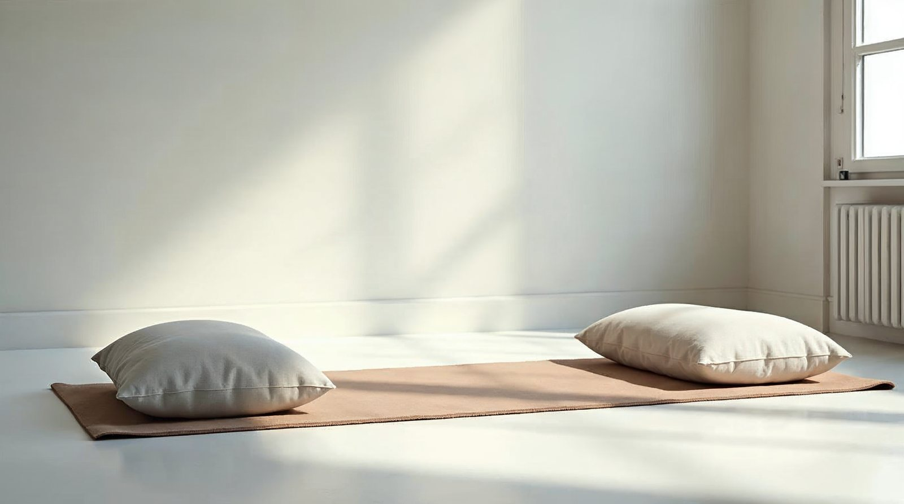
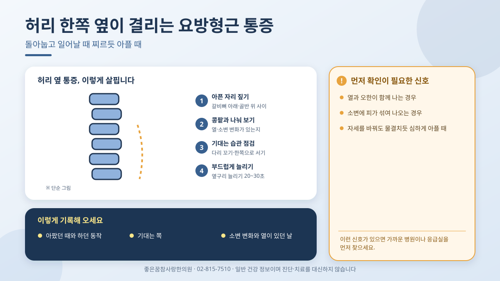

이종호 한의사 감수좋은꿈참사랑한의원 대표원장 (한의사 면허번호 19769)발행 2026-11-26 · 수정 2026-11-27
이 글의 차례
밤에 자다가 반대쪽으로 돌아누우려는 순간, 허리 한쪽 옆이 '억' 소리가 날 만큼 찌르듯 아파요. 아침에 침대에서 일어날 때도 그 자리가 당겨서 한참을 끙끙대야 겨우 몸을 일으키죠. 기침이라도 하면 허리 옆이 울려서 저도 모르게 손으로 그 자리를 짚게 되고요.
이런 분들이 손으로 짚는 자리는 대개 비슷해요. 등 쪽 허리, 맨 아래 갈비뼈와 골반 뼈 위 사이의 오목한 곳이에요. 이 자리 깊은 곳에 요방형근이라는 근육이 있거든요. "허리 옆이 아파요", "옆구리 뒤쪽이 결려요"라고 말씀하시는 분 가운데 이 근육이 관련된 경우가 꽤 많아요.
요방형근은 골반 위쪽에서 맨 아래 갈비뼈와 허리뼈 옆으로 이어지는 납작한 사각형 근육이에요. 몸을 옆으로 기울이고, 한쪽 골반을 끌어올리며, 서 있거나 걸을 때 허리를 옆에서 붙잡아 주는 일을 하죠. 겉으로 잘 드러나지 않지만 하루 종일 쉬지 않고 일하는 근육이에요.
텐트를 옆에서 붙잡아 주는 줄을 떠올려 보세요. 한쪽 줄만 계속 팽팽하게 당겨 두면 그 줄이 먼저 지치잖아요. 한쪽으로 기대 앉거나 한쪽 다리에만 체중을 싣는 습관이 오래되면 요방형근도 한쪽만 먼저 지치는 거예요.
그러니까 사실은 '허리 옆 근육이 아프다'와 '허리 안쪽 장기가 아프다'는 다른 얘기예요. 같은 자리에 느껴져도 콩팥 같은 장기 문제일 수 있어서, 저는 근육 쪽인지 아닌지부터 차분히 나눠 봐요.
오늘은 이 근육이 왜 아파지는지, 콩팥이나 디스크 같은 다른 원인과 어떻게 나눠 보는지, 진료실에서는 무엇을 여쭙고 보는지, 일상에서 덜 자극하며 지내는 방법을 정리해 볼게요.
요방형근 통증은 어떤 모습인가요
요방형근 통증은 대개 허리 한쪽 옆에 생깁니다. 깊은 곳이 묵직하게 결리다가, 특정 동작에서 찌르듯 아파지는 것이 흔한 모습입니다. 가만히 있으면 견딜 만한데 움직이는 순간 아파서 동작이 조심스러워집니다.
자주 말씀하시는 불편한 동작은 이렇습니다. 누워서 돌아눕기, 침대에서 일어나기, 앉았다 일어서기, 한쪽으로 몸을 기울이기, 바지를 입으려고 한쪽 다리를 들기, 기침이나 재채기하기입니다. 오래 서 있으면 허리 한쪽이 무너지는 듯 피곤하다는 분도 계십니다.
통증이 엉덩이 위쪽이나 골반 옆, 사타구니 쪽으로 번지듯 느껴지기도 합니다. 그래서 엉치나 고관절이 아프다고 오셨다가 허리 옆 근육을 눌러 보고 "바로 거기예요" 하시는 경우도 있습니다.
왜 허리 옆 근육이 아파질까요
요방형근은 몸이 한쪽으로 기울거나 비틀릴 때 그 균형을 잡느라 애를 씁니다. 그래서 한쪽으로 치우친 자세가 오래 이어지거나, 갑자기 옆으로 비트는 동작이 있을 때 쉽게 지치고 뭉칩니다.
- 한쪽 엉덩이에 체중을 싣고 앉거나 다리를 꼬는 습관
- 한쪽 다리에만 체중을 싣고 오래 서 있는 습관
- 무거운 가방이나 아이를 한쪽으로만 드는 일
- 허리를 숙인 채 옆으로 비틀며 물건을 드는 동작
- 소파에 옆으로 기대 누워 오래 TV나 휴대폰을 보는 습관
- 골프나 배드민턴처럼 한쪽으로 비트는 운동을 갑자기 많이 한 경우
다리 길이나 골반 높이가 조금 다르면 한쪽 요방형근이 늘 더 긴장하게 됩니다. 발목을 자주 삐었거나 한쪽 무릎이 불편해 걸음이 기울어진 분도 허리 옆이 결리는 경우가 많습니다. 그래서 진료실에서는 아픈 자리만 보지 않고 서 있는 모습과 걷는 모습을 함께 봅니다.
허리 깊은 곳의 다른 문제를 감싸느라 요방형근이 대신 긴장하기도 합니다. 디스크나 허리 관절이 불편하면 주변 근육이 허리를 붙잡으려 힘을 주는데, 그 역할을 요방형근이 많이 떠맡습니다. 그래서 근육만 풀고 끝내기보다 허리 전체를 함께 살핍니다.
콩팥이나 다른 원인과는 어떻게 다를까요
허리 옆과 옆구리 뒤쪽은 콩팥이 있는 자리와 가깝습니다. 그래서 이 자리가 아프면 콩팥이 걱정되어 오시는 분도 많습니다. 몇 가지 차이를 참고로 보세요.
- 근육 통증은 특정 동작에서 아프고, 편한 자세를 찾으면 덜해지는 경우가 많음
- 콩팥이나 요로의 통증은 자세와 상관없이 아프고, 열이나 소변 변화가 함께 오는 경우가 많음
- 요로 결석은 가만히 있어도 물결치듯 심하게 아파 자세를 바꿔도 편해지지 않는 경우가 많음
- 근육 통증은 누르면 같은 자리가 아프고, 몸을 옆으로 기울이면 당기는 경우가 많음
갈비뼈 쪽에 가깝고 숨을 깊이 쉬거나 기침할 때 콕 찌른다면 갈비뼈나 갈비뼈 사이 근육을 함께 봅니다. 피부가 화끈거리고 따끔거리다가 띠 모양으로 물집이 올라온다면 대상포진일 수 있어 피부과나 내과 확인이 먼저입니다.
허리 옆 통증과 함께 다리로 저림이 내려가거나, 기침에 다리가 찌릿하다면 디스크 쪽을 함께 살핍니다. 엉치뼈 바로 옆이 콕 찌르듯 아프다면 천장관절 쪽을 봅니다. 이렇게 허리 옆 통증은 근육, 관절, 내장, 피부 여러 갈래에서 올 수 있어 처음에는 꼼꼼히 나눠 봅니다.
집에서 해 볼 수 있는 간단한 확인
오시기 전에 몇 가지를 살펴 두시면 상담이 수월해집니다. 아프면 바로 멈추시고 무리하지 않는 범위에서만 해 보세요.
- 아픈 쪽 허리 옆 오목한 곳을 눌렀을 때 같은 통증이 재현되는지
- 서서 반대쪽으로 몸을 천천히 기울일 때 아픈 쪽이 당기는지
- 가만히 누워 편한 자세를 찾으면 통증이 줄어드는지
- 소변 색이나 횟수, 소변볼 때의 불편함에 변화가 있는지
- 열이나 오한, 피부의 따끔거림이나 물집이 있는지
누르면 아프고, 기울이면 당기고, 편한 자세에서 줄어든다면 근육 쪽에 가까울 수 있습니다. 소변 변화나 열이 함께 있다면 근육보다 내과나 비뇨의학과 확인이 먼저입니다.

요방형근 통증을 두고 자주 헷갈리는 것
첫째, 옆구리가 아프면 곧 콩팥 문제라는 생각입니다. 콩팥이나 요로 문제도 있지만, 실제로는 근육에서 오는 경우도 많습니다. 동작과의 관계, 소변과 열의 변화를 함께 보면 어느 쪽에 가까운지 짐작하는 데 도움이 됩니다.
둘째, 아픈 쪽으로 몸을 잔뜩 기울여 늘리면 풀린다는 생각입니다. 막 아파진 근육을 억지로 늘리면 오히려 더 뭉칠 수 있습니다. 처음 며칠은 편한 자세를 찾아 쉬어 가고, 통증이 조금 가라앉은 뒤에 부드럽게 늘려 주세요.
셋째, 근육통이니 저절로 지나가겠거니 하는 생각입니다. 가볍게 지나가는 경우도 많지만, 한쪽으로 치우친 습관이 그대로라면 같은 자리가 되풀이해서 아파 옵니다. 통증이 가라앉은 뒤 습관을 함께 살피는 것이 중요합니다.
먼저 이렇게 여쭙니다
처음 오시면 저는 대략 이런 순서로 여쭙니다. 떠오르는 대로 말씀해 주시면 됩니다.
- 언제부터, 어떤 계기로 아프기 시작하셨나요?
- 아픈 자리를 손으로 짚어 보실 수 있나요?
- 돌아눕기, 일어나기, 기울이기 가운데 어떤 동작이 가장 힘든가요?
- 앉거나 서 있을 때 한쪽으로 기대는 습관이 있나요?
- 소변의 변화나 열, 피부의 따끔거림은 없나요?
- 최근에 무거운 것을 들거나 비트는 운동을 하셨나요?
허리 진료 때는 대소변 변화가 없는지도 모든 분께 여쭙습니다. 허리 옆 통증에서는 특히 소변 쪽 확인이 중요해서 조금 더 자세히 여쭙기도 합니다.
일상에서 먼저 해 볼 수 있는 것
요방형근은 한쪽으로 치우친 자세와 깊이 이어져 있어서, 균형을 되찾는 작은 습관이 큰 차이를 만듭니다.
- 앉을 때 양쪽 엉덩이에 체중을 고르게 싣고 다리 꼬지 않기
- 서 있을 때 한쪽 다리에만 기대지 않고 두 발에 고르게 서기
- 가방은 양쪽으로 메거나 수시로 바꿔 들기
- 소파에 옆으로 기대 눕는 시간 줄이기
- 돌아누울 때 무릎을 굽히고 몸통을 통나무처럼 한 번에 돌리기
- 침대에서 일어날 때 옆으로 돌아누운 뒤 팔로 밀며 일어나기
통증이 조금 가라앉으면 부드러운 옆구리 늘리기를 해 보세요. 의자에 바르게 앉아 아픈 쪽 팔을 머리 위로 들고, 반대쪽으로 천천히 몸을 기울입니다. 허리 옆이 기분 좋게 당기는 정도에서 20~30초 머무릅니다. 찌르는 통증이 오면 그 자리에서 멈춥니다.
누워서 하는 동작도 있습니다. 옆으로 누워 아래쪽 무릎을 굽히고, 위쪽 다리를 침대 뒤로 살짝 늘어뜨리면 위쪽 허리 옆이 부드럽게 늘어납니다. 아픈 쪽이 위로 오게 누워 몇 번 숨을 길게 내쉬어 보세요. 숨을 내쉴 때마다 허리 옆이 조금씩 느슨해지는 것을 느끼실 수 있습니다.
따뜻한 찜질은 굳은 허리 옆 근육을 편안하게 해 줄 수 있습니다. 다만 소변 변화나 열이 함께 있다면 찜질보다 확인이 먼저입니다. 기침이나 재채기를 할 때 아프다면 허리 옆을 손으로 살짝 받치거나 무릎을 조금 굽히면 울림이 덜합니다.
생활 모습에 따라 달라지는 관리
아이를 키우는 분들은 아이를 한쪽 골반에 걸쳐 안는 일이 많습니다. 그 자세가 하루에도 수십 번 되풀이되면 한쪽 허리 옆이 늘 긴장하게 됩니다. 안는 쪽을 의식적으로 바꾸고, 아기띠를 쓸 때는 양쪽 어깨에 고르게 무게가 실리도록 맞춰 보세요.
계산대나 작업대처럼 몸을 한쪽으로 돌려 일하는 분은 발의 방향부터 바꿔 보시길 권합니다. 허리만 비틀어 물건을 옮기지 말고, 발을 한 걸음 옮겨 몸 전체를 돌리면 허리 옆에 실리는 부담이 크게 줄어듭니다.
골프나 배드민턴처럼 한쪽으로 비트는 운동을 즐기신다면, 운동 전에 허리 옆을 충분히 풀고 반대 방향으로도 가볍게 몸을 돌려 주세요. 통증이 있는 동안에는 연습량을 줄이고, 다시 시작할 때는 짧게 나눠서 하시는 것이 좋습니다.
한의원에서 함께 살필 수 있는 경우
- 허리 한쪽 옆이 결리고 돌아눕거나 일어날 때 찌르듯 아픈 경우
- 한쪽으로 기대는 습관과 함께 허리 옆 통증이 되풀이되는 경우
- 골반 높이가 다른 느낌과 함께 허리 한쪽이 피곤한 경우
- 운동이나 집안일 뒤 허리 옆이 결려 움직이기 불편한 경우
- 내과나 비뇨의학과 확인에서 큰 이상은 없다는데 허리 옆이 아픈 경우
좋은꿈참사랑한의원에서는 모든 분의 맥을 먼저 짚고, 아래의 '먼저 확인이 필요한' 신호가 없는지 살핍니다. 그다음 허리 옆 근육의 긴장과 누르는 자리의 반응, 골반 높이와 서 있는 자세, 걷는 모습을 함께 확인합니다.
진찰한 내용에 따라 침 치료, 골반과 허리의 균형을 보고 세기를 고르는 추나, 필요한 경우 초음파로 깊은 근육의 위치를 확인하며 놓는 약침 가운데 지금 상태에 맞는 것을 정합니다. 근막 통증이 오래 이어지는 경우에는 체외충격파를 상의하기도 합니다. 한약을 상의할 때는 드시는 약을 확인한 뒤 신중하게 정합니다.
병원에서 처방받은 약은 상의 없이 멈추지 마세요. 소변 변화나 열이 함께 있다면 내과나 비뇨의학과 확인을 먼저 안내하고, 한의원 진료는 그 확인과 나란히 갑니다.
이렇게 기록해 오시면 상담이 쉬워집니다
허리 옆 통증은 동작과 습관에 따라 크게 달라져서, 며칠간의 기록이 판단에 큰 도움이 됩니다.
- 하루 중 가장 아팠던 때와 그때 하던 동작
- 아침에 일어날 때와 밤에 돌아누울 때의 통증 점수(0~10)
- 앉거나 서 있을 때 기대는 쪽
- 소변 색과 횟수, 열이 있었던 날
- 운동이나 집안일을 한 날
특히 '어떤 동작에서 아팠는지'를 적어 보세요. 돌아눕기인지, 일어나기인지, 기울이기인지에 따라 살필 근육과 관리 방법이 조금씩 달라집니다.
균형을 되찾는 시간
허리 한쪽 옆의 통증은 몸이 한쪽으로 기울어 지내 온 시간이 남긴 신호일 때가 많아요. 아픈 게 가라앉았다고 다 끝난 건 아니에요. 아픈 자리를 풀어 주는 것과 함께 기울어진 습관을 바로잡아야 같은 자리가 되풀이해 아프지 않게 관리하는 데 도움이 되거든요.
처음에는 내가 어느 쪽으로 기대는지조차 잘 모르는 경우가 많아요. 원래 그래요. 거울 앞에 서서 어깨와 골반의 높이를 보거나, 가족에게 앉아 있는 모습을 사진으로 찍어 달라고 부탁해 보세요. 생각보다 한쪽으로 기울어 있는 내 모습을 발견하실 수 있어요.
뭉친 근육을 살피는 건 제가 할게요. 대신 하나만 부탁드려요. 이번 주엔 앉을 때 다리를 꼬지 않는 것 하나만 지켜 주세요. 딴 건 편하게 하셔도 돼요.
다음에 오시면 기록을 함께 보며 그다음을 정할게요. 그 사이 궁금한 게 생기면 편하게 물어보세요.
이런 증상은 먼저 확인이 필요합니다
- 옆구리 통증과 함께 열과 오한이 나거나 소변에 피가 섞여 나오는 경우
- 가만히 있어도 옆구리가 물결치듯 심하게 아파 식은땀이 나고 자세를 바꿔도 전혀 편해지지 않는 경우
이런 신호가 있으면 한의원보다 가까운 병원이나 응급실을 먼저 찾으세요.
함께 읽으면 좋은 글
- 옆구리가 결리고 아플 때 근육·갈비뼈·콩팥·피부 가운데 어디서 오는지 어떻게 나눠 살피나요?
- 옆구리와 등 뒤쪽이 아플 때 근육 문제인지 어떻게 구분해서 보나요?
- 골프를 치고 난 뒤 허리와 옆구리가 결리고 아플 때는 어떻게 나눠 살피나요?
- 허리 아래 엉치 한쪽이 콕 찌르듯 아픈 천장관절 통증은 어떻게 살피나요?
- 계산대에서 몸을 비틀며 일하면 허리 한쪽이 아픈 것은 어떻게 살피나요?

여쭙는 것
- 언제부터, 어떤 계기로 아프기 시작하셨나요?
- 아픈 자리를 손으로 짚어 보실 수 있나요?
- 돌아눕기, 일어나기, 기울이기 가운데 어떤 동작이 가장 힘든가요?
생활에서 해 볼 것
- 앉을 때 양쪽 엉덩이에 체중을 고르게 싣고 다리 꼬지 않기
- 서 있을 때 한쪽 다리에만 기대지 않고 두 발에 고르게 서기
- 가방은 양쪽으로 메거나 수시로 바꿔 들기
한의원에서 함께 살필 것
- 허리 한쪽 옆이 결리고 돌아눕거나 일어날 때 찌르듯 아픈 경우
- 한쪽으로 기대는 습관과 함께 허리 옆 통증이 되풀이되는 경우
- 골반 높이가 다른 느낌과 함께 허리 한쪽이 피곤한 경우
먼저 확인이 필요한 신호
- 옆구리 통증과 함께 열과 오한이 나거나 소변에 피가 섞여 나오는 경우
- 가만히 있어도 옆구리가 물결치듯 심하게 아파 식은땀이 나고 자세를 바꿔도 전혀 편해…
한눈에 보는 표
| 구분 | 핵심 |
|---|---|
| 여쭙는 것 | 언제부터, 어떤 계기로 아프기 시작하셨나요? 아픈 자리를 손으로 짚어 보실 수 있나요? |
| 생활에서 해 볼 것 | 앉을 때 양쪽 엉덩이에 체중을 고르게 싣고 다리 꼬지 않기 서 있을 때 한쪽 다리에만 기대지 않고 두 발에 고르게 서기 |
| 한의원에서 함께 살필 것 | 허리 한쪽 옆이 결리고 돌아눕거나 일어날 때 찌르듯 아픈 경우 한쪽으로 기대는 습관과 함께 허리 옆 통증이 되풀이되는 경우 |
| 먼저 확인이 필요한 신호 | 옆구리 통증과 함께 열과 오한이 나거나 소변에 피가 섞여 나오는 경우 가만히 있어도 옆구리가 물결치듯 심하게 아파 식은땀이 나고 자세를 바꿔도 전혀 편해지지 않는 경우 |
자주 묻는 질문
허리 옆이 아픈데 콩팥 문제인지 어떻게 알 수 있나요?
근육 통증은 특정 동작에서 아프고 편한 자세에서 덜해지는 경우가 많고, 콩팥이나 요로 문제는 자세와 상관없이 아프며 열이나 소변 변화가 함께 오는 경우가 많습니다. 소변 변화나 열이 있다면 내과나 비뇨의학과 확인이 먼저입니다.
돌아누울 때마다 아픈데 어떻게 누우면 좋을까요?
무릎을 굽히고 몸통을 통나무처럼 한 번에 돌리면 허리 옆 부담이 줄어듭니다. 옆으로 누울 때는 무릎 사이에 베개를 끼워 골반이 비틀리지 않게 해 보세요.
스트레칭은 언제부터 해도 되나요?
막 아파진 처음 며칠은 편한 자세를 찾아 쉬어 가고, 찌르는 통증이 조금 가라앉은 뒤에 부드럽게 늘려 주시길 권합니다. 동작 중 찌르는 통증이 오면 멈추세요.
골반 높이가 다르다는 말을 들었는데 관련이 있나요?
골반 높이나 다리 길이가 조금 다르면 한쪽 허리 옆 근육이 늘 더 긴장할 수 있습니다. 진찰로 서 있는 자세와 걷는 모습을 함께 보고, 앉고 서는 습관부터 살펴봅니다.
파스나 찜질은 도움이 되나요?
근육이 굳어 있을 때는 따뜻한 찜질이 편안함을 줄 수 있습니다. 다만 열이나 소변 변화가 함께 있다면 찜질보다 확인이 먼저이고, 피부가 예민한 분은 파스를 오래 붙이지 않도록 주의하세요.
좋은꿈참사랑한의원은 재진 때 지난번 이야기부터 이어서 여쭙니다. 진료시간과 예약은 오시는 길에서 확인하세요.
어디서 상담받을 수 있나요?
좋은꿈참사랑한의원은 서울 동작구 만양로2길 2 신성빌딩 3층·5층(서울 동작구 상도동, 7호선 상도역 3번 출구 근처)에 있습니다. 한의사 3명(이종호 대표원장, 조영기 수석진료원장, 정원영 진료원장)이 진료합니다. 진료시간은 평일 09:30~20:00(점심 13:00~14:00), 토·일·공휴일 09:30~15:00이며, 방문 전 전화로 확인을 권합니다. 예약은 네이버 예약, 카카오톡 상담, 전화 02-815-7510로 받습니다.
이 글은 일반적인 건강 정보이며 개인의 진단이나 치료를 대신하지 않습니다. 증상이 있거나 복용 중인 약이 있다면 진료를 통해 확인하세요. 치료 효과는 개인마다 다를 수 있습니다.
작성 기준: 일반적으로 알려져 있는 건강 정보를 참고해 정리했습니다(대표원장 감수). 증상 기록은 1~2주 동안 하루 1회, 비슷한 시간에 적어 오시면 지난 상태와 비교하기 쉽습니다.